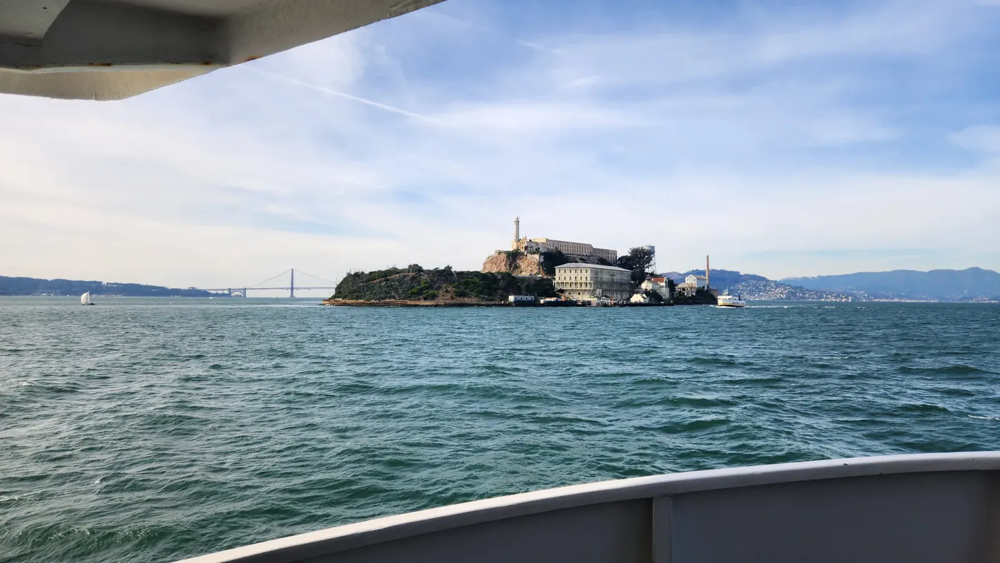

Within Sight
Saturday was crisp and cloudless, the sky a deep December blue. This was one last long weekend for just the two of us before our family grew by one, so we started slow, on a rooftop garden that was probably Salesforce Park, laid across the top of a transit center. Orange pincushion proteas and a tall monkey puzzle tree grew right up against the glass towers. A transit center with a park on its roof is the kind of city planning I wish I saw everywhere. Down at Embarcadero Plaza, the Vaillancourt Fountain tipped water out of tilted concrete boxes into a green pool. It dates to 1971 and people have argued about it ever since. I wouldn't call it pretty, yet I couldn't stop looking.
On Sunday the sky turned hazy and we took the ferry out to Alcatraz. The bay was choppy and blue-green, and the island grew from a rocky hump into a lighthouse and a pale cellhouse. It was a federal prison from 1934 to 1963, but what struck me was how close it sits to the city. It is only a mile and a quarter offshore, and from its edge you can see the whole skyline. One narrow cell held a bunk, a shelf, a checkerboard and a bare bulb. A burned-out concrete shell stared at the bay through empty window frames, and beyond a rusted fence of barbed wire the Golden Gate Bridge hung in the haze. Freedom was in plain sight the whole time, just across water nobody was allowed to cross. In the terraced gardens, tiny magenta blossoms took no notice of the island's reputation.


Late that afternoon we were at Pier 39, where sea lions have held the floating docks since around 1990. In December most of the planks sat empty, with the sea lions bunched onto just a few. One slid off the edge with a splash while the sun burned through the haze behind the Ferris wheel. After dark we found our way up Grant Avenue in Chinatown, under red paper lanterns and strings of fairy lights, the Li Po neon glowing over the street. It is often called the oldest Chinatown in North America, and it was a fine place to end the weekend.